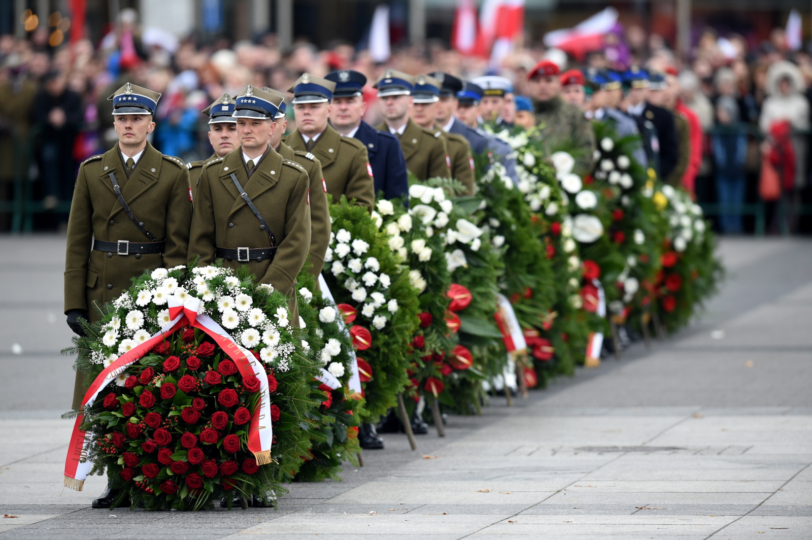
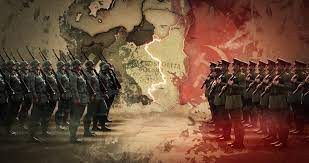
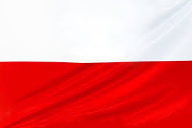
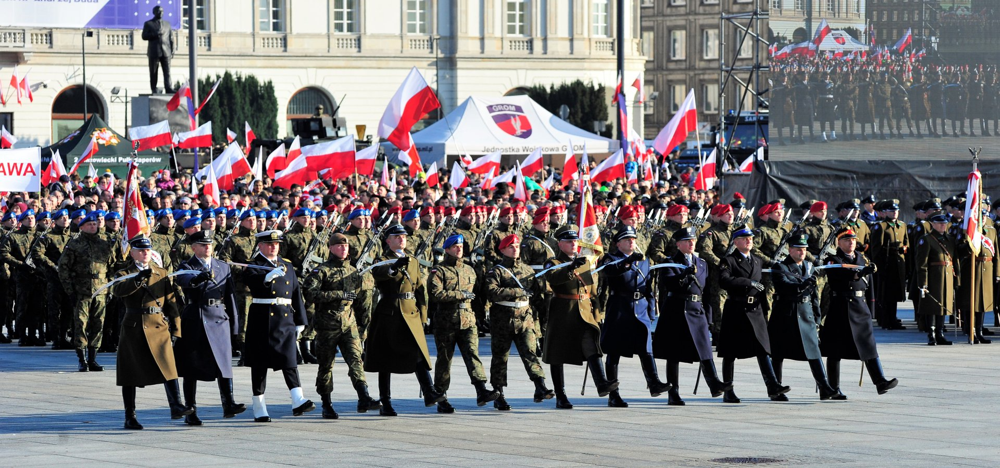

Witaj na stronie poświęconej niepodległości Polski! Dnia 11 listopada 1918 roku Polska odzyskała swoją suwerenność po latach zaborów.
Na zdjęciu widoczne są tłumy świętujące niepodległość na ulicach polskiego miasta w dniu 11 listopada.
Po wielu latach zaborów, Polska odzyskała niepodległość 11 listopada 1918 roku. Wydarzenie to jest niezwykle ważne dla historii kraju.
Flagą Polski jest biało-czerwony prostokąt. Godło przedstawia orła białego, symbolizującego niepodległość i wolność.
Flaga Polski
Flaga Polski - biało-czerwony symbol narodowy.
Coroczne obchody Święta Niepodległości obejmują uroczystości, defilady i wiele innych wydarzeń, jednocząc społeczność w duchu patriotyzmu.
Chcielibyśmy wyrazić najgłębsze podziękowania dla wszystkich bohaterów, którzy oddali życie, zdrowie i siły dla walki o niepodległość Polski. Wasza odwaga i poświęcenie nie mają sobie równych. Dziękujemy za Waszą niezłomną determinację i oddanie sprawie wolności naszej Ojczyzny. Niech Wasza pamięć będzie zawsze z nami.